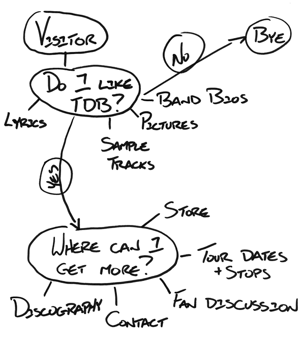
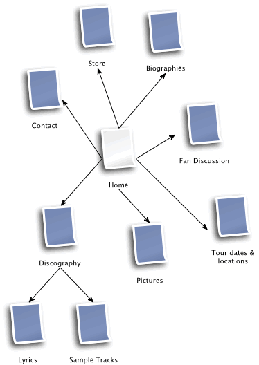
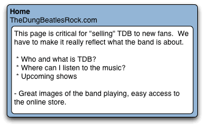
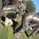

6: Information Architecture - Planning out a web site
11th October 2012: Material moved to webplatform.org
The Opera web standards curriculum has now been moved to the docs section of the W3C webplatform.org site. Go there to find updated versions of these docs, and much more besides!
12th April 2012: This article is obsolete
The web standards curriculum has been donated to the W3C web education community group, to become part of a much bigger educational resource. It is constantly being updated so that it remains current with modern web design practices and technologies. To find the most up-to-date web standards curriculum, visit the web education community group Wiki. Please make changes to this Wiki yourself, or suggest changes to Chris Mills, who is also the chair of the web education community group.
- Previous article —Web standards—beautiful dream, but what’s the reality?
- Next article—What does a good web page need?
- Table of contents
Introduction
Traditionally, the planning stage of a web site (or any project) can be a little stressful. Everyone has an opinion about how a web site should be built, and often their opinions will conflict with one another. Your number one goal on any web site should be to build something that’s useful for the people who will be using it. It really doesn’t matter what your boss says, what that guy down the hall with a doctorate in software engineering says, or even what your personal preferences are; at the end of the day, if you’re building a web site for a particular group of people, their opinion is the only one that matters.
This article is going to look at the early stages of planning out a web site, and a discipline that is commonly referred to as Information architecture, or IA. This involves thinking about who your target audience will be, what information and services they need from a web site, and how you should structure it to provide that for them. You’ll look at the entire body of information that needs to go on the site and think about how to break that down into chunks, and how those chunks should relate to one another. The sections below are as follows:
You need to plan out the site you’re building
You’ll come upon the odd web project that you can just dive right into without any up front thought, but these are, by far, the exception and not the norm. We’re going to take a look at a fictional band called “The Dung Beatles” and try to help them work through the early stages of planning out their web site. We’ll talk with the band and find out what goals they have, and what they would like to see on their web site. Then we’ll dive in and start working on a structure for the band’s information.
Introducing “The Dung Beatles”
The Dung Beatles (TDB) have a problem. They are the hottest Beatles tribute band in Moose Jaw, Saskatchewan, but they need to raise their profile for an upcoming North American tour this summer. They’ve got venues scheduled throughout Canada and the United States, but they’re virtually unknown outside of their hometown. If only there was some way, using technology, to reach a large number of Beatles fans for relatively little money.
Lucky for TDB, we’ve got this thing called the World Wide Web, and they quickly decide that building a web site is the answer they’ve been searching for. TDB needs a place to promote their tour dates, build a fan base in other cities and raise awareness of the band. You’re going to work through their ideas with them and see if you can chart out a plan for their web site.
You schedule a meeting with your new clients to hash out the details of what they’re looking for and to decide on due dates and costs. You open the conversation by suggesting that you talk about the goals and objectives of the web site in order to get an idea of what they want. What does the band hope to achieve with their online presence?
TDB starts talking about their upcoming tour, and how they want to get the word out to Beatles fans in all of their scheduled stops. It’s February now, and they’re scheduled to kick off their tour in five months time.
Hang on a second! A web site alone won’t build it’s own traffic and publicise itself. You extract from the conversation thus far that the main goal for the site is to provide a home for TDB fans online; a place where they can keep up to date on the latest news, tour dates and venues. Through the fans (word of mouth), and some other advertising venues, new people will be driven to the web site where they can download sample tracks, check out pictures of the band (in full costume) and find out where/when they can check them out live.
Raul McCoffee, the front man of the group, points out that it would be nice to be able to raise a little extra money for the tour through the sale of some CDs and band merchandise. You gather the band around and draw out a quick sketch of what a visitor might want when they visit the web site. This is just a really rough brainstorm of ideas; it’s got very little structure at this point.
There are two general groups of people who will visit the site—people who know TDB already and like them (fans), and people who are unsure. You’ve got to cater to both those groups in different ways; potential fans need to be “sold” on the group, whereas current fans want to “feed their addiction” (so to speak). What sort of information is each of these groups going to be looking for? Figure 1 gives an indication of this—this is a typical sketch of the type that you’ll want to make at this point in future web site projects. From this, you’ll work out what pages the web site needs, and how they should link to one another.
Figure 1: What your web site visitors want.
You settle on a budget, and agree to launch the web site in one month. You promise to get back to the band in a couple of days with some plans outlining the direction you’re going in.
Now what? Drawing a site map
A lot of people will throw together a site map at this stage—this looks like an org (organisational) chart. This is usually a pretty basic graphic showing simply the names of each page on the site and how they link into the overall structure of the web site. Personally, I like to put in a little more detail and talk about the purpose and content of each page. For example, a page may be labeled “Home”, but what is the home page? Is it a cheesy “welcome to our web site” message (yuck!) or is it a more dynamic page containing news items and enticing images? Take a few minutes to think about what pages the above sketch might turn into, and what might be contained on each page. Have a go at drawing your own site map before moving on to the next section.
Now let’s get started with the basics: one of those org charts that I mentioned above. Figure 2 shows my attempt at taking the brainstorm and turning it into a site org chart:
Figure 2: First iteration of site structure. Figure 2 image description
That definitely captures all of the pages we’ll need, but there’s no real grouping going on here. It’s just a big mess of pages now, and at this point I hadn’t really given a lot of thought to what things are called. I did one more pass and try to “chunk” the information into slightly larger groupings—Figure 3 shows what I did:

Figure 3: Site structure, revised. Figure 3 image description
I’ve done a couple of things with the revised site structure. The “Band News” page gives TDB a place to post anything they want to share with their fans. Even after their summer tour is over, and the “Tour dates and locations” page is no longer relevant, they’ll be able to post stuff. Adopting a blog format here will let fans comment in context on the various stories, and will help to build an online community around TDB. News and tour events will likely spark the most discussion, so let’s group that all together. Additionally, the word “News” is a simpler, more general word that people will be able to recognise faster if they’re skimming a page for the information they want.
Our new “About The Dung Beatles” page groups together the band members’ biographies as well as their pictures. Going this route gives us a jumping off point for individual band member biographies. Following a similar argument to the one we made above, “About” is a common term used on a lot of web sites. Any time a visitor wants to learn more about a company, a product, a service, or an individual, they usually look for an “About” link.
Finally, the term “Discography” is a bit of a technical term. It’s possible that fewer people will understand what that term means than “The Music”. Also, it opens up this page to additional content: sources of inspiration, history of a particular song…you get the idea. I think we’re ready to roll. After I’ve talked a bit about naming pages sensibly, we’ll move on to add a little more detail about each page.
Naming your pages
Page names can be one of the most crucial decisions you’ll make during web site design. Not only is it important for your visitors so that they can find their way around your web site; it is also another thing that dictates how easy your site is to find using a search engine (you’ll find various mentions of search engine optimisation throughout the course).
In general, search engines look at the text included in a web page, the URL of that page, and the text of any links to that page when they’re deciding “how important” it is. Giving your pages sensible names and sensible URLs will encourage anyone linking to your pages to use sensible descriptions.
Here’s an example. Let’s say you’re a car company, and you have a model called “The Speedster”. You’ve got a web site to promote your automobile, and one of the pages lists available features. Do you call this page “Features”, “Available Features”, “Features of the Speedster”, or “Bells and Whistles”? I would suggest that “Features of the Speedster” is the best option from this list. It’s specific to what the page contains, chances are that the title will be displayed high up on the page and will be prominent (good for search engine indexing), and you may even be able to fit it into the URL (something like “www.autocompany.com/speedster/speedster-features/”).
Adding some details
You don’t have to figure out everything at this point, but you need to at least provide a brief description of what you have in mind for each page. After you’ve got the site structure, number each of your pages and provide a brief description for each page, like I’ve done in Figure 4 for the home page (you’ll get a chance to do this for the other pages in one of the exercises questions at the end of the article.)
Figure 4: Page Details for the Home page. Figure 4 image description
This is about as involved as you want to get at this point. You don’t need to describe page functionality, the technology you’ll use to build it, or the design/layout in great detail. Just describe what you have in mind in general terms. Your goal here is to communicate what you’re thinking to your client and to force you to think things through.
It’s not uncommon at this stage to come to the realisation that you have too many pages, and you’ll never be able to find content for them. You can go crazy in creating a hierarchy of pages. For example, if the band members just wanted to publish one paragraph about themselves, it wouldn’t be necessary to create separate biography pages for each member. They could all be combined into a single page.
Summary
This article has looked at the web site as a whole, and how you should think about structuring it. In the next article, you’re going to get taken down to the page level, and look at what goes into making a great web site: what features to include and where to include them. Articles 8, 9 and 10 then look at the visual design of a page. So this is being done in 3 logical steps (check it with the client at each stage to make sure they are happy with it):
- First you decide on the content of a web site, and decide how to structure that content into pages.
- Next you decide on the functionality that will actually be used on your web site.
- The last thing you do before you actually start going ahead and coding your web site is work out the visual design of it—the page layouts, and the colour scheme, etc.
Exercise questions
- Look back at Figure 1 and try to develop a similar brainstorm for a web site about a car (pick any current or imaginary car).
- What will visitors to the web site want to know?
- Is there anything at existing car web sites that you see as essential? Frivolous?
- Take your brainstorm and try to organise the information. What page groupings make sense?
- Another activity that is sometimes useful when planning out a web site is to check out the competition. Do a search for band web sites (bonus points for tribute bands), and take a look at what they’re offering. Did we miss anything?
- Take a look at Figure 4 and try to develop similar figures for the other pages I’ve identified on the web site.
- Previous article —Web standards—beautiful dream, but what’s the reality?
- Next article—What does a good web page need?
- Table of contents
About the author

Jonathan Lane is the President of Industry Interactive—a web development/web application development company located on Mayne Island, British Columbia, Canada. He got his start in development working for the University of Lethbridge Curriculum Re-Development Center as their web projects coordinator for many years.
He blogs at Flyingtroll and is currently developing Mailmanagr, an e-mail interface for the Basecamp project management application.
This article is licensed under a Creative Commons Attribution, Non Commercial - Share Alike 2.5 license.
Comments
The forum archive of this article is still available on My Opera.
-

thanks I think this chapters are exactly what I was looking for. I appreciate this great work, Jonathan.
No new comments accepted.Ramon Carmona
Tuesday, February 7, 2012